Olio Extra Vergine

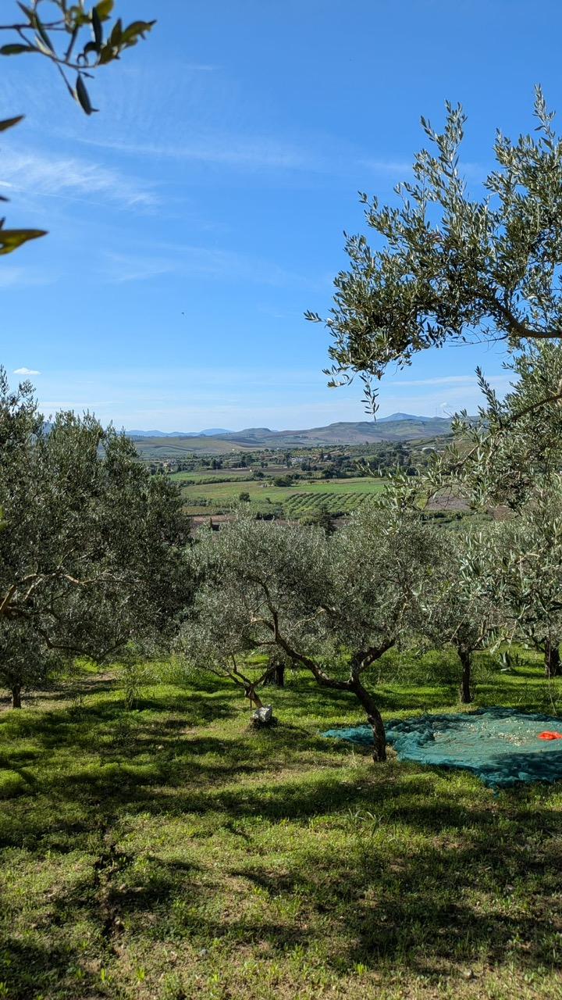
Nonno Totó’s olive grove.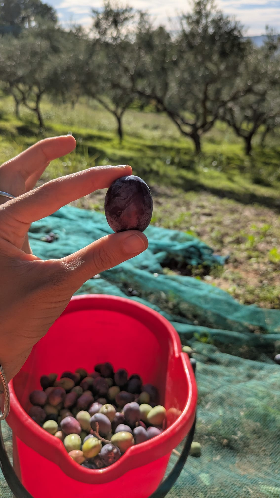
Fresh Nocellara olive.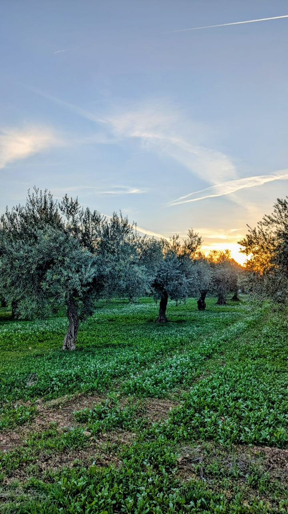
Olive grove at Caltabellotta.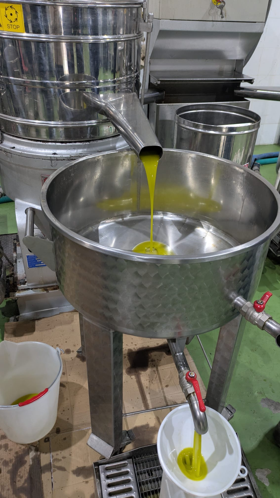
Fresh Oliamo olive oil 2026.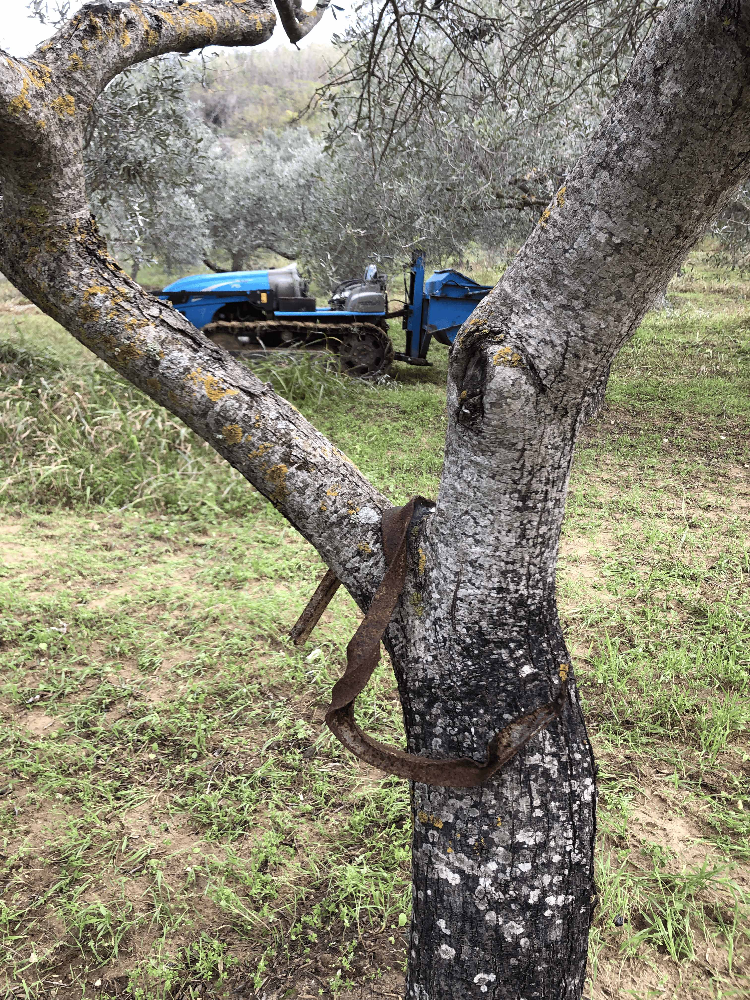
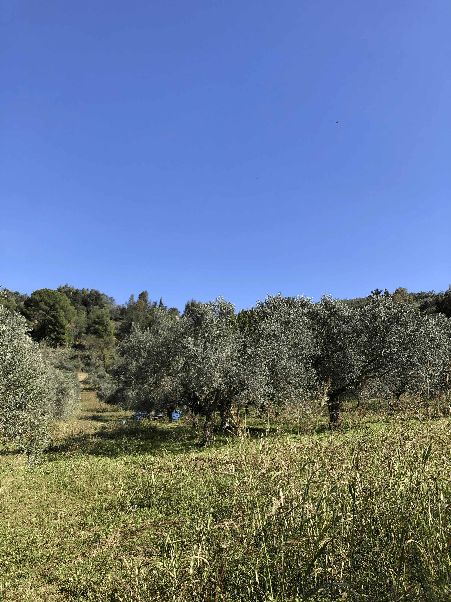
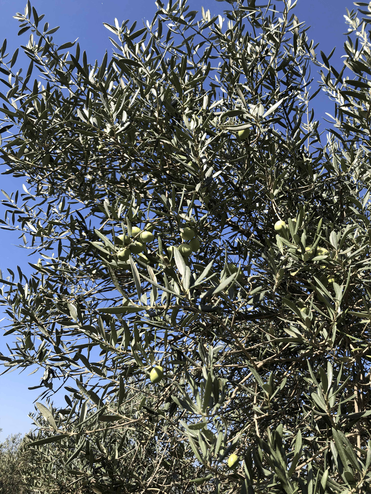
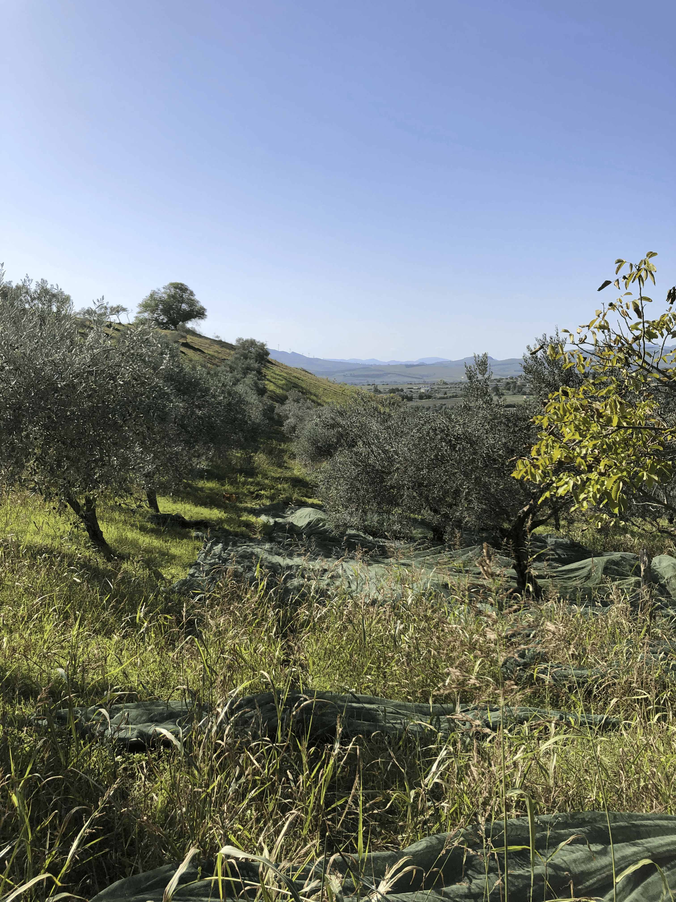
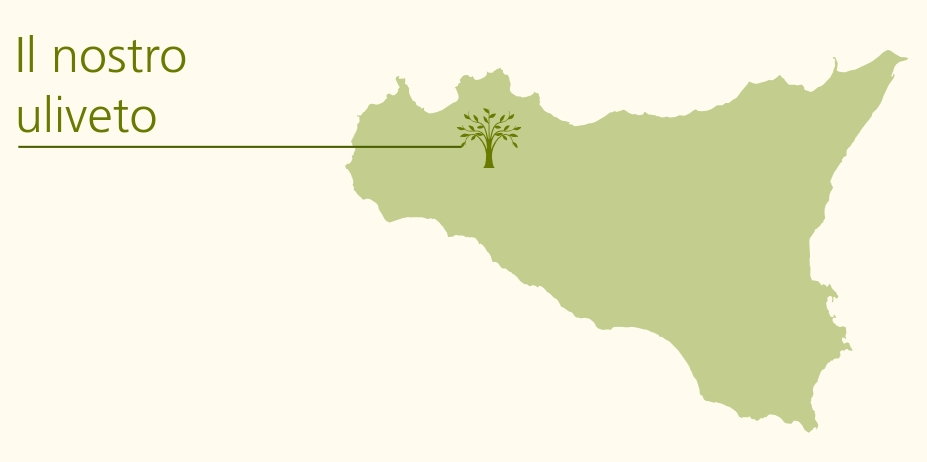
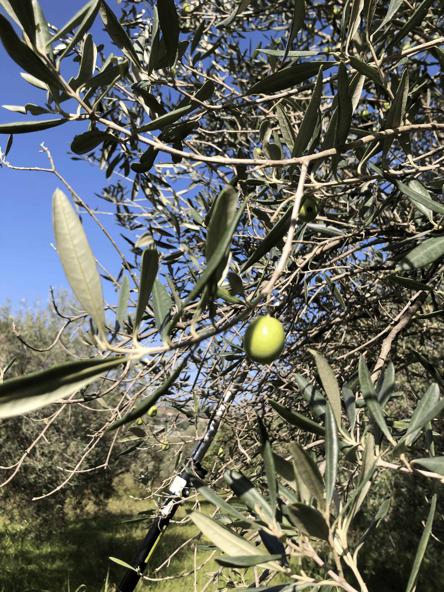
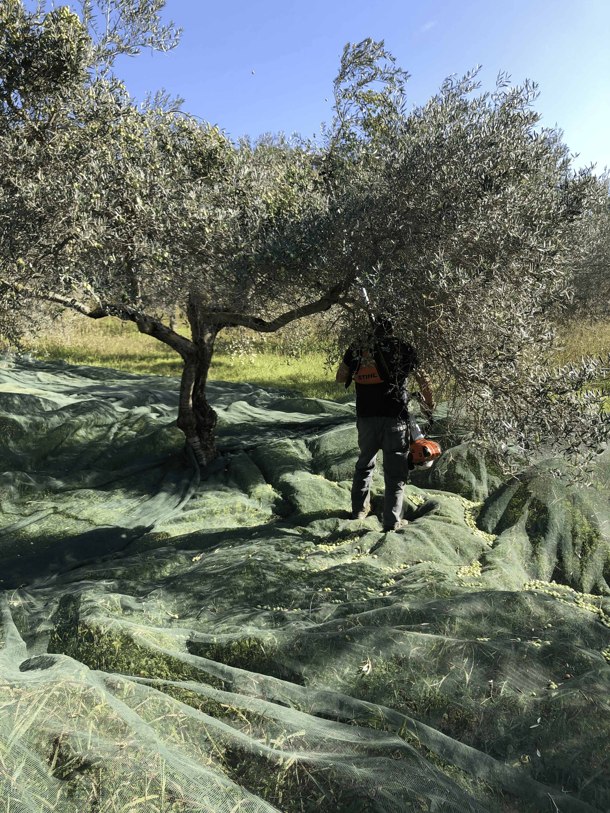
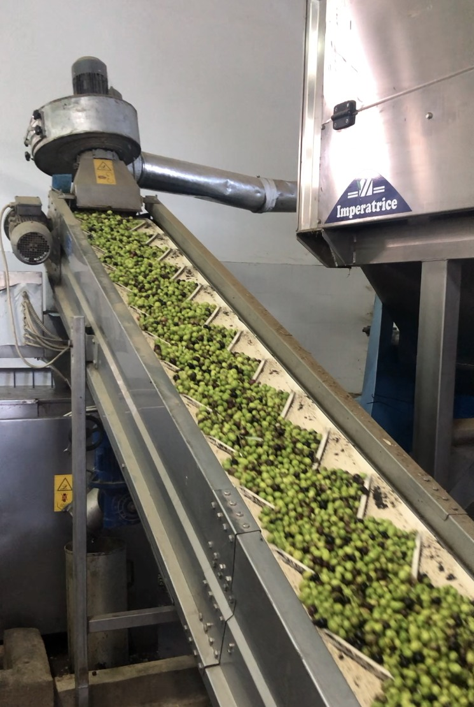

Information according to § 5 TMG (Telemedia Act):
Name:
Justus
E-Mail:
oliamototo@gmail.com
We take the privacy of your personal information seriously. This privacy policy explains how we collect, use, and protect your data on our website.
Email:oliamototo@gmail.com
We collect personal data such as name, email address, and IP addresses when you use our services. This data is processed to provide you with services and improve your user experience.
We process your data based on your consent, our contractual obligations, or our legitimate interest in improving our website and services.
We may share your data with trusted third-party partners and service providers, such as payment processors, analytics providers, and marketing services.
Our website uses cookies to enhance user experience. You can control cookie settings through your browser preferences.
Your data will be stored for as long as necessary to fulfill the purposes mentioned in this policy.
You have the right to access, correct, delete, and object to the processing of your personal data. You can also request data portability.
We implement appropriate technical and organizational measures to ensure your personal data is protected from unauthorized access or loss.
Your personal data may be transferred to third countries. We ensure that these transfers comply with data protection regulations.
We may update this privacy policy periodically. Please check this page regularly for the latest version.